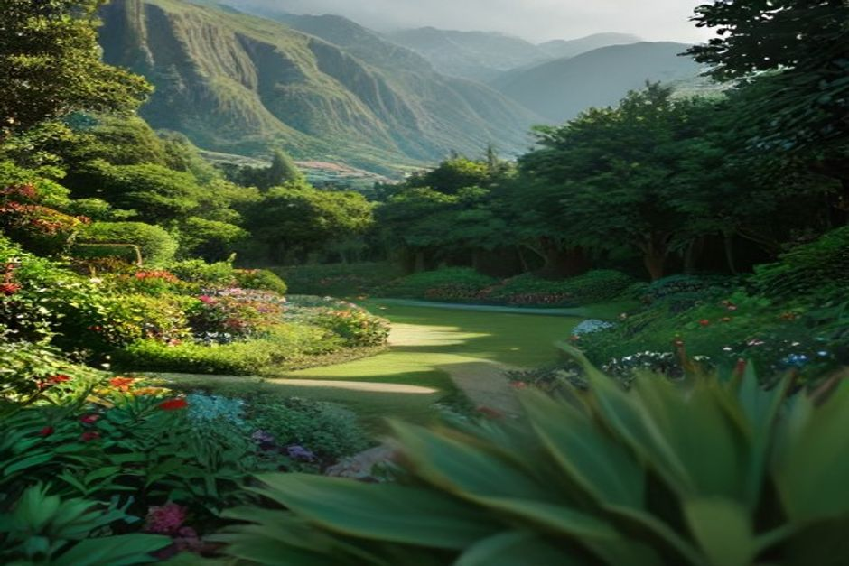

Vous préparez votre séjour et la question revient vite : quels jardins visiter à Madère, et lesquels peut-on laisser de côté ? L'île se surnomme « l'île du printemps éternel », et la douceur subtropicale comme l'humidité de l'Atlantique y font pousser presque tout, des rhododendrons de l'Himalaya aux strelitzias d'Afrique. Voici dix jardins, avec pour chacun ce qu'on y trouve vraiment, et la façon de les enchaîner sans y passer vos vacances.
Quel jardin choisir à Madère ? Le résumé
Si vous n'avez le temps que pour un seul, choisissez selon ce que vous aimez :
- Le plus complet : Monte Palace, à flanc de colline au-dessus de Funchal.
- La vue sur la baie : le Jardim Botânico da Madeira, sur ses terrasses.
- Le plus calme : Palheiro Gardens, dans l'esprit d'un parc anglais.
- Gratuit et sans effort : le Jardim Municipal et le jardin de Santa Catarina, en ville.
- Le plus original : la Fajã dos Padres, un jardin cultivé au pied de la falaise, qu'on rejoint très bien par la mer.
Les jardins de la colline au-dessus de Funchal
C'est là que se concentre l'essentiel. On y monte en téléphérique depuis la vieille ville, ou en voiture, et la plupart des étapes sont proches les unes des autres.
Monte Palace Tropical Garden : le plus complet
Soixante-dix mille mètres carrés à flanc de colline : un jardin oriental, un lac peuplé de carpes koï, un mur d'azulejos portugais, une promenade en forêt de laurisylve et un musée de plus de 700 minéraux et pierres semi-précieuses. Si vous ne voulez en faire qu'un, c'est celui-ci.
Le téléphérique de Monte part de la vieille ville et facilite l'accès. Le concert quotidien « Music at the Monte », au bord du lac central, a lieu à midi : une bonne raison de caler votre visite autour de la mi-journée.

Jardim Botânico da Madeira : la vue et les cactus
Le jardin botanique de Funchal occupe des terrasses à flanc de falaise. Plus de 2 500 espèces, exotiques ou locales, y sont plantées dans des parterres denses et colorés. La section de cactus et de plantes succulentes, très géométrique, est la plus marquante.
La vue plongeante sur Funchal et la baie est l'un des meilleurs points de vue gratuits de l'île, même si l'entrée du jardin, elle, est payante. Il est à quelques minutes à pied du Jardim Orquídea et de la station du téléphérique, ce qui permet de les visiter ensemble.
Jardim Orquídea : un complément, pas une destination
Petit jardin sous serre, tout près du Jardim Botânico. Il abrite plusieurs centaines d'espèces et d'hybrides d'orchidées, avec des anthuriums, des broméliacées et des plantes carnivores. Une demi-heure suffit pour le voir correctement : prévoyez-le comme une étape de plus, pas comme le but de la journée.
Palheiro Gardens : le calme d'un domaine anglais
Palheiro est l'inverse de Monte Palace. Ce jardin de style anglais, à 500 mètres au-dessus de Funchal, joue sur les parterres à la française, les grandes pelouses, les sous-bois et l'une des plus belles collections de camélias d'Europe. La famille Blandy, connue pour son vin de Madère, l'a façonné pendant deux siècles.
On a encore l'impression d'un domaine privé plutôt que d'une étape touristique. On y vient autant pour le silence que pour les plantes.
Quinta Jardins do Lago : à voir si vous êtes déjà dans le coin
Jardin d'hôtel ouvert aux visiteurs extérieurs, organisé autour d'un canon du XVIIIe siècle et de plusieurs bassins. Ses plantations tropicales n'ont rien à envier à celles des jardins payants voisins. Il est moins connu que Palheiro, tout proche, et le combiner avec lui est logique si vous êtes dans cette partie des collines.
Jardins en ville : gratuits ou presque sans détour
Pas de voiture, pas de téléphérique : ces jardins se glissent dans une balade à pied.
Jardim Municipal do Funchal
Petit, gratuit, près de l'Avenida Arriaga, et c'est là que s'installent les habitants : allées de palmiers, kiosque à musique, ombre à cinq minutes de la cathédrale. Il ne vous prendra pas un après-midi, mais c'est le plus facile à intégrer à une promenade dans la vieille ville.
Jardim de Santa Catarina
Plus vaste, gratuit lui aussi, perché sur la falaise entre la vieille ville et la marina. Vue sur la baie de Funchal, petit lac, chapelle, parterres qui changent selon la saison. C'est moins soigné que les jardins botaniques en altitude, mais l'emplacement, à quelques pas du port, en fait l'étape idéale avant ou après une sortie en bateau.
Quinta das Cruzes : un jardin sans la foule
Derrière la vieille ville, le jardin du musée de la Quinta das Cruzes est plus sauvage et plus discret. Des vestiges de pierre y sont disséminés : encadrements de fenêtres et portes sculptés, sauvés de bâtiments historiques démolis dans la ville. Le tout se tient sous des dragonniers et des orchidées. Le bon choix si vous voulez des jardins loin de l'affluence de Monte ou du Jardim Botânico.
Deux jardins qui sortent de l'ordinaire
Fajã dos Padres : un jardin cultivé, vu depuis la mer
Ce n'est pas un jardin d'agrément, c'est un jardin de travail : une étroite bande de terrasses de bananiers, de manguiers et de vignes, au niveau de la mer, sous des falaises de 300 mètres. Des prêtres jésuites l'ont planté il y a des siècles et on le cultive toujours.
La plupart des visiteurs y descendent en téléphérique depuis le haut de la falaise. Nous trouvons plus beau d'y arriver par la mer : le bateau mouille à quelques brasses, et c'est précisément l'arrêt baignade de notre excursion de jour, au départ de Funchal avec passage par Câmara de Lobos et Cabo Girão.

Ribeiro Frio : la fraîcheur de l'altitude
À 900 mètres, près de la ferme aquacole à truites, les petits jardins de Ribeiro Frio mêlent fougères, hortensias et camélias sous la laurisylve indigène. Le climat n'a rien à voir avec celui de la côte : frais, humide, ombragé. Ce n'est pas un jardin à visiter pour lui-même, plutôt une pause verte sur la route du belvédère de Balcões. Mais ce contraste avec les jardins du littoral vaut la peine dans une même journée.
Comment les combiner
- Une matinée : Monte Palace, le Jardim Botânico et le Jardim Orquídea, tous à quelques minutes les uns des autres sur la colline. Ajoutez le téléphérique et la descente en toboggan de Monte si le cœur vous en dit.
- Un après-midi tranquille : Palheiro, éventuellement avec Quinta Jardins do Lago.
- Une balade en ville : Jardim Municipal, Quinta das Cruzes, puis Santa Catarina jusqu'à la marina.
- Une journée à part : la Fajã dos Padres, de préférence depuis la mer, ou Ribeiro Frio en route vers Balcões.
Quand voir les jardins de Madère en fleurs ?
Il y a toujours quelque chose en fleur, climat subtropical oblige. La fin de l'hiver et le printemps, de février à mai, sont le moment fort pour les camélias, les agapanthes, les strelitzias et les jacarandas.
Quels jardins sont payants ?
Le Jardim Municipal do Funchal et le parc de Santa Catarina sont gratuits et ouverts toute l'année. Monte Palace, le Jardim Botânico, Palheiro Gardens, le Jardim Orquídea et la Quinta das Cruzes demandent un droit d'entrée modeste. Pensez à vérifier les horaires et les tarifs avant de partir.
Madère n'a pas un grand jardin : elle en a une douzaine, chacun façonné par un microclimat différent, à quelques centaines de mètres du précédent.
Voir la Fajã dos Padres depuis un bateau privé
Si vous voulez compléter vos visites de jardins par une journée en mer, notre excursion de jour part de la Marina do Funchal, ponton C, à 10 h ou à 14 h. Le bateau est pour votre groupe seul, jusqu'à 5 personnes, avec deux skippers de Madère. Comptez 2 h 30 jusqu'à Ribeira Brava pour 500 €, ou 3 h jusqu'à Ponta do Sol pour 600 €, avec Câmara de Lobos, Cabo Girão, une baignade et des paddles à la Fajã dos Padres. Les prix sont ceux du bateau entier, pas par personne.
La sortie coucher de soleil part 1 h 15 avant le coucher du soleil, toute l'année : 2 h jusqu'à Cabo Girão pour 400 €, ou 2 h 30 jusqu'à Ribeira Brava pour 500 €, sans arrêt baignade. À bord, repas et boissons, vidéo 360° Insta360, images de drone si la météo le permet et photos prises avec un vrai appareil. Annulation gratuite jusqu'à 24 heures avant le départ. Retrouvez toutes nos sorties ou notre page infos pratiques.